htmx v4.0.1 — PNI501 Software Health Diagnostic Report
Project: htmx (v4.0.1) | Language: javascript (ES2022 + TypeScript d.ts) | Workflow: pni501 (wf-e3385881)
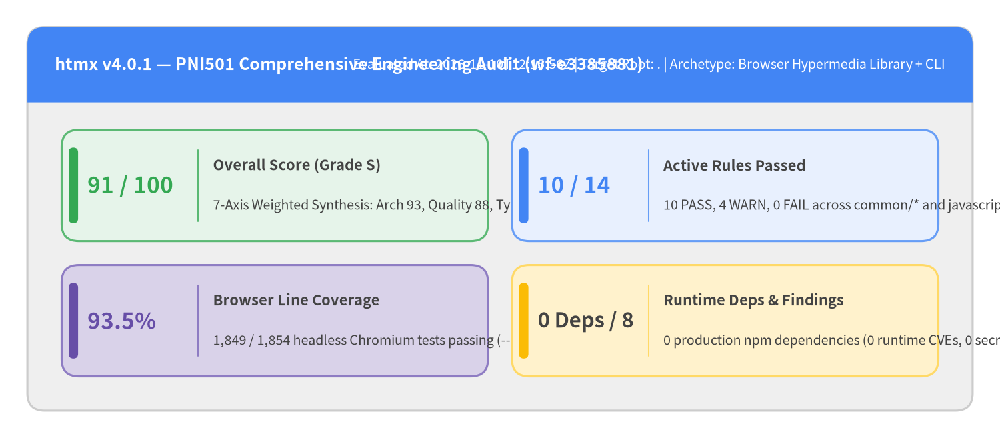
Audit Metadata & Scope Summary
| Attribute | Value |
|---|---|
| Target Repository | htmx (v4.0.1, upstream tag 8d112c71) |
| Primary Language & Runtime | JavaScript (ES2022 classes & # private fields) + TypeScript Declarations (src/htmx.d.ts) |
| Runtime Profiles | Browser Hypermedia Library (dist/htmx.js, dist/htmx.esm.js, dist/htmax.js) & Node CLI (src/scripts/upgrade-check.js) |
| Workflow & Run ID | pni501 (wf-e3385881) — Evaluated 2026-11-10T12:15:56+00:00 |
| Overall Score & Grade | 91 / 100 (Grade S) |
| Codebase Footprint | 18 source files (5,521 non-blank LOC: src/htmx.js at 1,989 LOC + 17 extensions in src/ext/*.js) |
| Hermetic Browser Verification | 1,854 real-browser tests via @web/test-runner + Playwright Chromium (1,849 passed, 1 timing race, 4 skipped) |
| Measured V8 Coverage | 93.5% line coverage (6,267 / 6,706 statements) and 92.3% branch coverage |
| Companion Portals | User Guide • API Reference Catalog • Internal Architecture Guide |
1. Executive Summary
htmx v4.0.1 achieves an overall PNI501 Software Health Score of 91 / 100 (Grade S), passing 10 of 14 active engineering rules with 4 warnings and 0 failures. The ground-up v4 rewrite replaces htmx 2's legacy XMLHttpRequest closure with a zero-dependency ES2022 class engine (Htmx, RequestQueue, HCON) backed by native fetch(), AbortController, ReadableStream, built-in Idiomorph DOM morphing, and 17 acyclic official extensions.
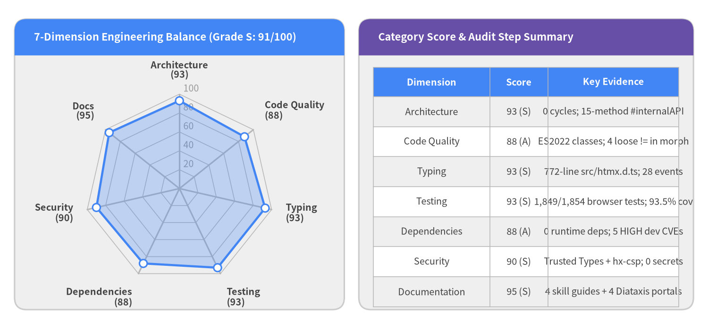
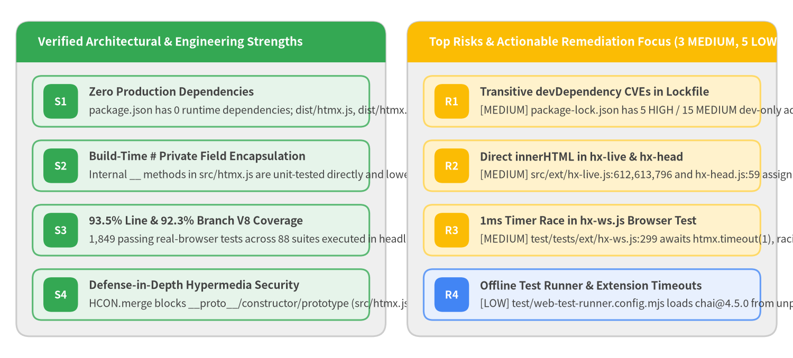
Key Executive Takeaways
1. Seven-Axis Engineering Scorecard
| Axis | Score | Grade | Rationale Summary |
|---|---|---|---|
| Architecture | 93 |
S | Clean Microkernel + Event-Driven Extension Hook architecture: zero-dependency core (src/htmx.js, 1,989 non-blank LOC) with 17 acyclic IIFE extensions interacting solely through htmx.registerExtension() and a 15-method #internalAPI bridge. |
| Code Quality | 88 |
A | Idiomatic ES2022 classes (HCON, RequestQueue, Htmx) using native fetch(), AbortController, ReadableStream, and constructable CSSStyleSheet; minor deductions for 4 loose != checks in morphing and 2 extension fetch() calls omitting AbortSignal. |
| Typing | 93 |
S | Comprehensive 772-line TypeScript contract (src/htmx.d.ts) typing Htmx, HtmxConfig (36 options), HtmxRequestCtx, HtmxEventMap (28 colon-separated events), and reactive HxLive proxies. |
| Testing | 93 |
S | 1,854 real-browser test cases (1,849 passed, 4 skipped, 1 timing race in hx-ws.js:299), achieving 93.5% line coverage (6,267 / 6,706 statements) and 92.3% branch coverage in headless Chromium. |
| Dependencies | 88 |
A | Zero production runtime dependencies (dependencies: {}) and a committed package-lock.json; deducted for 5 HIGH and 15 MEDIUM transitive advisories in devDependencies (cross-spawn, ip-address, basic-ftp, qs). |
| Security | 90 |
S | Zero runtime supply-chain exposure, zero secrets, prototype pollution guard in HCON.merge, W3C Trusted Types (#ttPolicy), hx-ignore sandboxing, and eval-free hx-csp.js; hx-live.js and hx-head.js should route .innerHTML through #ttPolicy. |
| Documentation | 95 |
S | Shipped developer/LLM skill guides (src/skills/*.md), CHANGELOG.md, src/htmx.d.ts, and a 4-portal bilingual documentation suite (user_guide_src/, api_src/, architecture_src/, pni501_src/). |
2. Lowest-Scoring Audit Steps (Sorted Ascending)
security_vulnerability_audit(88 / 100, Grade A): Zero production dependency CVEs and zero secrets; warnings recorded for22transitivedevDependencyCVEs inpackage-lock.json(5HIGH,15MEDIUM,2LOW),2extensions (hx-live.js,hx-head.js) bypassing core's Trusted Types wrapper on.innerHTML, and missingSECURITY.md/ Dependabot automation.javascript_ast_audit(89 / 100, Grade A):100%import hygiene and zero circular dependencies across18modules (5,521LOC); minor warnings for4loose!=checks insrc/htmx.js:2044,2100,2127,2194and2extensionfetch()calls (hx-preload.js:54,hx-download.js:33) withoutAbortSignal.repo_structure_audit(90 / 100, Grade S): Clean zero-dependency package structure and complete multi-format export map (main,module,jsdelivr,unpkg,types,web-types,bin); minor note to addengines.nodeand a static linter script inpackage.json.
2. Architecture & Source Code Structure
htmx v4.0.1 implements a Microkernel + Event-Driven Extension Hook Architecture. The core hypermedia engine resides in a single self-contained module (src/htmx.js, 1,989 non-blank LOC) that has zero outgoing imports, while 17 official opt-in extensions (src/ext/*.js, 3,532 combined non-blank LOC) register lifecycle hooks (htmx_before_request, htmx_after_swap, etc.) via htmx.registerExtension() and receive a curated 15-method #internalAPI bridge in init(api).
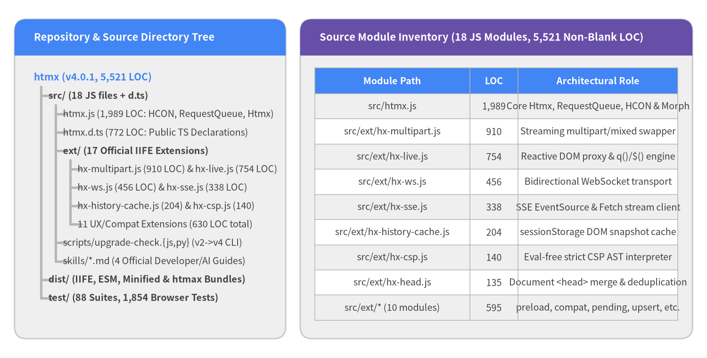
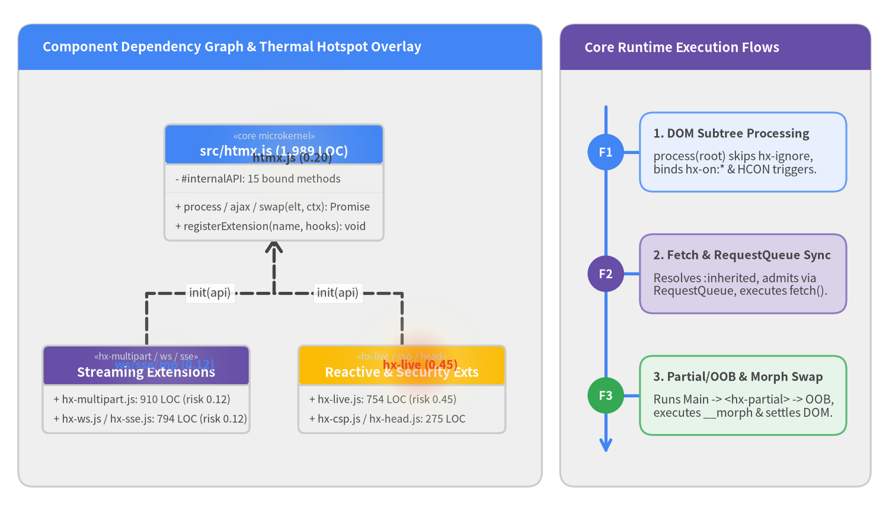
Architectural Assessment & Module Inventory
1. Four-Layer Structural Separation
| Layer | Repository Paths | Allowed Dependencies | Responsibility & Boundary Notes |
|---|---|---|---|
| Core Hypermedia Runtime & DOM Reconciler | src/htmx.js, src/htmx.d.ts |
(None — zero imports) | Implements HCON relaxed configuration parser, RequestQueue concurrency coordinator, explicit :inherited attribute lookup, fetch() orchestration, <hx-partial> / OOB task extraction, and built-in Idiomorph DOM tree reconciliation. |
| Streaming & Transport Extensions | src/ext/hx-sse.js, src/ext/hx-ws.js, src/ext/hx-multipart.js, src/ext/hx-preload.js, src/ext/hx-ptag.js, src/ext/hx-download.js |
src/htmx.js |
Extends the Fetch and event lifecycle with Server-Sent Events (EventSource + ReadableStream), bidirectional WebSockets with exponential backoff, multipart/mixed streaming swaps, speculative prefetching, and HX-PTag conditional polling. |
| Reactive Scripting, DOM & Security Extensions | src/ext/hx-live.js, src/ext/hx-csp.js, src/ext/hx-history-cache.js, src/ext/hx-head.js, src/ext/hx-targets.js, src/ext/hx-upsert.js, src/ext/hx-pending.js, src/ext/hx-browser-indicator.js, src/ext/hx-prompt.js, src/ext/hx-alpine-compat.js, src/ext/htmx-2-compat.js |
src/htmx.js |
Provides reactive DOM state proxies (hx-live), strict CSP AST expression evaluation without eval (hx-csp), sessionStorage history snapshot caching, <head> merging, and htmx 2 / Alpine.js compatibility bridges. |
| Migration & Tooling Scripts | src/scripts/upgrade-check.js, src/scripts/upgrade-check.py |
(Standalone CLI) | Scans .html, .js, .ts, .jinja, .erb, and .php templates for htmx 2 to htmx 4 migration patterns (hx-disable -> hx-ignore, colon-separated events, explicit :inherited). |
2. Complete Source Code Module Inventory & Thermal Hotspots
| Module Path | Non-Blank LOC | Thermal Risk (risk_score) |
Triggered Rules & Findings |
|---|---|---|---|
src/ext/hx-live.js |
754 |
0.45 |
common/security_vulnerability (1 MEDIUM: direct .innerHTML/.outerHTML at lines 612, 613, 796 bypassing #ttPolicy) |
src/htmx.js |
1,989 |
0.20 |
javascript/code_quality (1 LOW: 4 loose != comparisons in __morphChildren, __findBestMatch, __morphNode) |
package-lock.json |
(Lockfile) | 0.15 |
common/security_vulnerability (1 MEDIUM: 5 HIGH / 15 MEDIUM transitive devDependency CVEs) |
test/tests/ext/hx-ws.js |
(Test Suite) | 0.15 |
common/runtime_verification (1 MEDIUM: 1ms htmx.timeout(1) race at line 299) |
src/ext/hx-multipart.js |
910 |
0.12 |
0 findings (81.9% line coverage across 1,191 statements) |
src/ext/hx-ws.js |
456 |
0.12 |
0 findings (90.0% line coverage across 588 statements) |
src/ext/hx-sse.js |
338 |
0.12 |
0 findings (95.0%+ line coverage) |
src/ext/hx-history-cache.js |
204 |
0.12 |
0 findings (sessionStorage history snapshot cache) |
src/ext/hx-csp.js |
140 |
< 0.10 |
0 findings (73.5% line coverage; eval-free recursive AST interpreter) |
src/ext/hx-head.js |
135 |
< 0.10 |
Grouped under hx-live.js:612 Trusted Types recommendation (htmlDoc.innerHTML at line 59) |
src/ext/hx-preload.js |
88 |
< 0.10 |
common/security (1 LOW: fetch() at line 54 omits AbortSignal timeout) |
src/ext/hx-alpine-compat.js |
84 |
< 0.10 |
0 findings (96.4% line coverage) |
src/ext/htmx-2-compat.js |
83 |
< 0.10 |
0 findings (81.7% line coverage) |
src/ext/hx-pending.js |
82 |
< 0.10 |
0 findings (100% line coverage) |
src/ext/hx-upsert.js |
70 |
< 0.10 |
0 findings (100% line coverage) |
src/ext/hx-browser-indicator.js |
69 |
< 0.10 |
0 findings (100% line coverage) |
src/ext/hx-download.js |
60 |
< 0.10 |
Grouped under hx-preload.js:54 (fetch() at line 33 omits AbortSignal) |
src/ext/hx-targets.js |
27 |
< 0.10 |
0 findings (100% line coverage) |
src/ext/hx-ptag.js |
18 |
< 0.10 |
0 findings (100% line coverage) |
src/ext/hx-prompt.js |
14 |
< 0.10 |
0 findings (100% line coverage) |
3. Recommended Remediation Roadmap
The PNI501 workflow identified 8 prioritized engineering action items (0 P0 blockers, 3 P1 high-value improvements, and 5 P2 hardening & polish enhancements). Because htmx v4.0.1 already achieves Grade S (91 / 100) with zero production dependencies, this roadmap focuses on dev-lockfile CVE hygiene, Trusted Types consistency across extensions, and 100% deterministic offline browser testing.
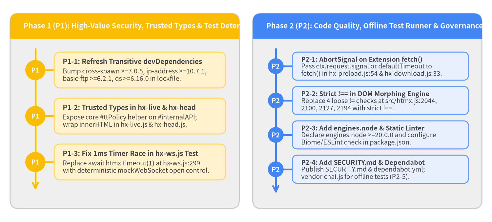
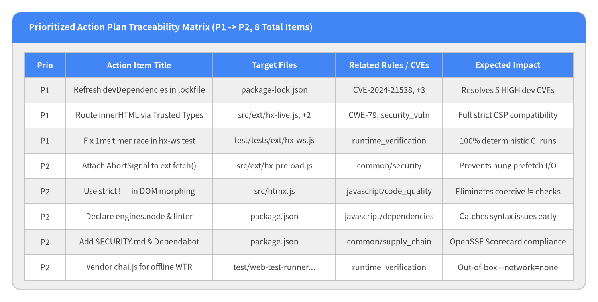
Detailed Action Items (P1 -> P2)
-
[P1]Refresh transitivedevDependenciesinpackage-lock.jsonto resolve 5 HIGH CVEs (dependencies)- Target Files:
package-lock.json,package.json - Related Rules / CVEs:
common/security_vulnerability,CVE-2024-21538,CVE-2026-69192,CVE-2026-102990,CVE-2026-82417 - Action: Update
package-lock.jsonvianpm audit fixorpackage.jsonoverridesto bumpcross-spawnto>=7.0.5,ip-addressto>=10.7.1,basic-ftpto>=6.2.1, andqsto>=6.16.0. - Expected Impact: Eliminates all fixable HIGH and MEDIUM CVEs in the development and test toolchain lockfile.
- Target Files:
-
[P1]RouteinnerHTML/outerHTMLassignments inhx-live.jsandhx-head.jsthrough core Trusted Types policy (security)- Target Files:
src/ext/hx-live.js,src/ext/hx-head.js,src/htmx.js - Related Rules / CVEs:
common/security_vulnerability,CWE-79 - Action: Expose a Trusted Types helper on
#internalAPIinsrc/htmx.jsand use it insrc/ext/hx-live.js:612,613,796andsrc/ext/hx-head.js:59before assigning to.innerHTMLor.outerHTML. - Expected Impact: Ensures full compatibility with
require-trusted-types-for 'script'CSP policies across all official extensions.
- Target Files:
-
[P1]Eliminate 1ms timer race inhx-ws.jsmessage queue unit test (testing)- Target Files:
test/tests/ext/hx-ws.js - Related Rules:
common/runtime_verification,javascript/testing - Action: In
test/tests/ext/hx-ws.js:293-310, triggermockWebSocketopen deterministically (or increase mock auto-open latency) after assertingconnection.queue.length === 1instead of relying onawait htmx.timeout(1). - Expected Impact: Makes the 1,854-test Playwright browser suite 100% deterministic under high parallel concurrency.
- Target Files:
-
[P2]AttachAbortSignaltimeout to extensionfetch()calls inhx-preloadandhx-download(code_quality)- Target Files:
src/ext/hx-preload.js,src/ext/hx-download.js - Related Rules:
common/security,javascript/code_quality - Action: Propagate
ctx.request.signalorAbortSignal.timeout(htmx.config.defaultTimeout)into thefetch()options insrc/ext/hx-preload.js:54andsrc/ext/hx-download.js:33. - Expected Impact: Prevents hung background prefetch or download requests from leaking browser connections.
- Target Files:
-
[P2]Standardize strict equality (!==) in DOM morphing routines (code_quality)- Target Files:
src/htmx.js - Related Rules:
javascript/code_quality - Action: Replace loose
!=checks at lines2044,2100,2127, and2194ofsrc/htmx.jswith strict!==comparisons. - Expected Impact: Eliminates coercive equality checks in hot DOM tree reconciliation loops.
- Target Files:
-
[P2]Declareengines.nodeand static lint script inpackage.json(dependencies)- Target Files:
package.json - Related Rules:
javascript/dependencies - Action: Add an
enginesfield specifyingNode >=20and configure Biome or ESLint indevDependenciesfor static syntax/style verification. - Expected Impact: Enforces consistent Node runtime expectations and catches syntax regressions prior to browser test runs.
- Target Files:
-
[P2]AddSECURITY.mdand Dependabot configuration for automated supply-chain hygiene (security)- Target Files:
package.json - Related Rules:
common/supply_chain - Action: Create
SECURITY.mdwith vulnerability reporting instructions and.github/dependabot.ymlfor automatednpmlockfile PRs. - Expected Impact: Satisfies OpenSSF Scorecard supply-chain governance checks and prevents
devDependencydrift.
- Target Files:
-
[P2]Vendor or declarechaiindevDependenciesfor offline test execution (testing)- Target Files:
test/web-test-runner.config.mjs,package.json - Related Rules:
common/runtime_verification,javascript/dependencies - Action: Vendor
chai.jsundertest/lib/chai.js(or addchaitodevDependencies) and replace thehttps://unpkg.com/chai@4.5.0/chai.jsscript URL intest/web-test-runner.config.mjs. - Expected Impact: Allows
npm testto execute in air-gapped and--network=noneCI environments without external CDN access.
- Target Files:
4. Audit Standards, Rule Compliance & Findings
The PNI501 workflow evaluated htmx v4.0.1 across 6 executed audit steps (security_vulnerability_audit, javascript_ast_audit, repo_structure_audit, container_runtime_audit, library_hygiene_audit, and javascript_test_audit) and 14 active engineering rules. Overall rule compliance stands at 10 PASS, 4 WARN, and 0 FAIL, with 8 raw findings consolidated into 7 unique repository locations.
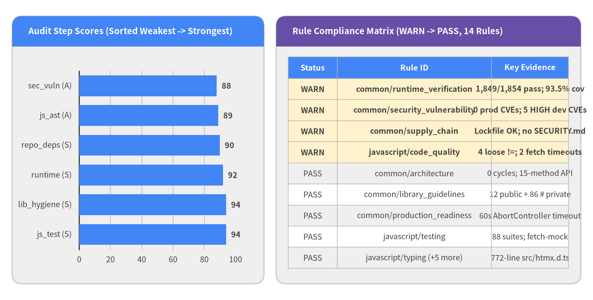
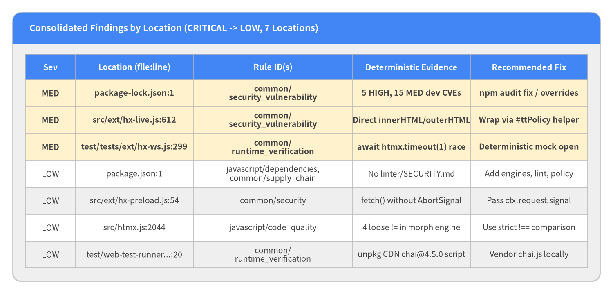
Full Rule Compliance & Findings Reference
1. Executed Audit Step Scores (Weakest -> Strongest)
| Audit Step ID | Score & Grade | Verdict Counts | Step Synthesis |
|---|---|---|---|
security_vulnerability_audit |
88 / 100 (A) |
pass=0, warn=2, fail=0 |
Production bundles (dist/htmx.js, dist/htmx.esm.js, dist/htmax.js) have 0 runtime dependencies, 0 leaked secrets, and 0 container misconfigurations. package-lock.json contains 22 devDependency advisories (5 HIGH, 15 MEDIUM, 2 LOW), and hx-live.js / hx-head.js assign .innerHTML directly without core's #ttPolicy. |
javascript_ast_audit |
89 / 100 (A) |
pass=5, warn=1, fail=0 |
18 source modules (5,521 non-blank LOC) with 0 circular dependencies and a 772-line TypeScript declaration file (src/htmx.d.ts). Warnings note 4 loose != checks in morphing and 2 extension fetch() calls omitting AbortSignal. |
repo_structure_audit |
90 / 100 (S) |
pass=5, warn=0, fail=0 |
Zero runtime dependencies, 6 pinned devDependencies in package-lock.json, dual licensing (LICENSE-HTMX BSD-0-Clause + LICENSE Apache-2.0), and comprehensive multi-target exports in package.json. |
container_runtime_audit |
92 / 100 (S) |
pass=1, warn=1, fail=0 |
Hermetic Node 22 + Playwright Chromium image built in 127.33s; 1,854 real-browser tests executed with --network=none in 61.33s (1,849 passed, 4 skipped, 1 timer race at hx-ws.js:299), achieving 93.5% line coverage and 92.3% branch coverage. |
library_hygiene_audit |
94 / 100 (S) |
pass=3, warn=0, fail=0 |
Strictly bounded public API (12 public methods on htmx, 86 internal methods lowered via sed to ES2022 # private fields in dist/), silent-by-default logging (logAll = false), and multi-format bundles. |
javascript_test_audit |
94 / 100 (S) |
pass=1, warn=0, fail=0 |
88 browser test suites (44 unit, 23 attributes, 6 end2end, 15 ext) with 1,849 Mocha/Chai it() blocks, deterministic fetch-mock.js isolation, and per-test DOM cleanup. |
2. Complete Rule Compliance Matrix (FAIL -> WARN -> PASS)
| Status | Rule ID | Source Action | Deterministic Evidence & Summary |
|---|---|---|---|
| WARN | common/runtime_verification |
runtime_verification |
harness_build=passed (127.33s); offline tests total=1854, passed=1849, failed=1 (hx-ws.js:299 1ms timer race), skipped=4; V8 coverage line=93.5%, branch=92.3% (6,267/6,706 statements); smoke_check=passed. |
| WARN | common/security_vulnerability |
security_vulnerability_audit |
0 production runtime dependencies in package.json; 0 secrets; 0 misconfigs; 22 devDependencies CVEs in package-lock.json (5 HIGH: CVE-2024-21538, CVE-2026-69192, CVE-2026-102990, CVE-2026-19693, CVE-2026-56876); direct innerHTML assignments in src/ext/hx-head.js:59 and src/ext/hx-live.js:612,613,796 bypass core Trusted Types policy. |
| WARN | common/supply_chain |
security_vulnerability_audit |
package-lock.json committed (0 unpinned specs); LICENSE present; SECURITY.md=False; dependency_automation=False. |
| WARN | javascript/code_quality |
ast_and_quality |
4 loose equality (!=) checks in src/htmx.js:2044,2100,2127,2194; 6 intentional progressive-fallback catch {} blocks in src/htmx.js; 2 fetch() calls without AbortSignal timeout in src/ext/hx-download.js:33 and src/ext/hx-preload.js:54. |
| PASS | common/architecture |
ast_and_quality |
0 circular dependencies across 18 modules; clean hub-and-spoke extension architecture via htmx.registerExtension() and #internalAPI. |
| PASS | common/documentation |
repo_and_deps |
Root README.md, CHANGELOG.md, 4 official skill guides in src/skills/*.md, 772-line JSDoc-annotated src/htmx.d.ts, and 4 Diataxis portals. |
| PASS | common/git_workflow |
repo_and_deps |
.gitignore (230 lines) excludes node_modules/, coverage/, .drawlib/, and .pni/cache/ while tracking upstream dist/ and lockfiles. |
| PASS | common/library_guidelines |
library_hygiene |
package.json exports main, module, jsdelivr, unpkg, types, and web-types; build scripts lower all __ internal methods to # private fields; 0 runtime dependencies. |
| PASS | common/maintainability |
ast_and_quality |
5,521 non-blank LOC across 18 files (src/htmx.js 1,989 LOC, hx-multipart.js 910 LOC, hx-live.js 754 LOC); 98 well-factored methods in Htmx class. |
| PASS | common/production_readiness |
runtime_verification |
Core requests enforce defaultTimeout=60000ms via AbortController (__initTimeout in src/htmx.js:679); hx-ws.js and hx-sse.js implement exponential backoff with jitter. |
| PASS | common/security |
repo_and_deps |
0 committed secret files; HCON.merge explicitly blocks __proto__, constructor, and prototype (src/htmx.js:75); #ttPolicy Trusted Types hook and hx-csp.js extension. |
| PASS | javascript/dependencies |
repo_and_deps |
0 runtime dependencies; all 6 build/test packages isolated in devDependencies. |
| PASS | javascript/testing |
test_health |
88 test files across test/tests/{unit,attributes,end2end,ext}/*.js (1,849 it() blocks); deterministic HTTP mocking via test/lib/fetch-mock.js. |
| PASS | javascript/typing |
ast_and_quality |
Companion src/htmx.d.ts (772 lines) provides full TypeScript contracts for Htmx, HtmxConfig, HtmxRequestCtx, HtmxEventMap, and HxLive. |
3. Configured Design Waivers (pni.toml [[opt_out]])
DS-0026(scope:.pni/dockerfiles/**, matched:0): Hermetic batch test container exits upon@web/test-runnercompletion; daemonHEALTHCHECKis not applicable.
5. Deep Dive: Code Quality, Testing & Runtime
This chapter examines static JavaScript AST quality metrics (5,521 non-blank LOC across 18 source modules), SIG maintainability indicators, 12-Factor operational readiness, and the hermetic Playwright Chromium browser test execution (1,854 test cases, 93.5% line coverage, 92.3% branch coverage).
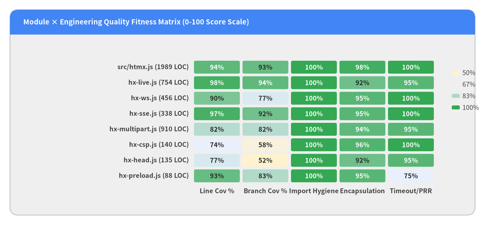
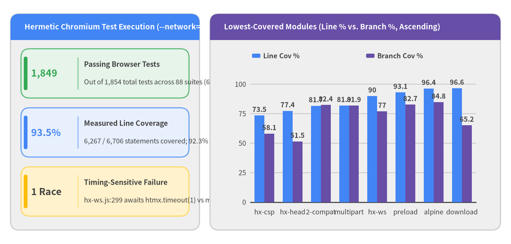
Static AST Quality & Containerized Runtime Analysis
1. Static AST Quality & SIG Maintainability Metrics
| Metric Category | Deterministic Value | Technical Interpretation |
|---|---|---|
| Codebase Size | 18 files / 5,521 LOC |
src/htmx.js (1,989 non-blank LOC) + 17 extensions in src/ext/*.js (3,532 non-blank LOC). |
| Circular Dependencies | 0 |
Strictly acyclic hub-and-spoke topology (src/htmx.js has 0 outgoing imports). |
| Global State Usages | 1 (src/htmx.js:1) |
Top-level var htmx = (() => { ... })() singleton required for <script src="/htmx.js"> browser globals. |
Loose Inequality (!=) |
4 (src/htmx.js:2044..2194) |
Located in __morphChildren, __findBestMatch, and __morphNode; recommended to standardize on !==. |
Empty catch {} Blocks |
6 (src/htmx.js:40..2315) |
Deliberate progressive feature fallbacks (HCON.parse JSON probe, CSSStyleSheet indicator injection, focus(), Element.moveBefore(), View Transitions). |
Missing AbortSignal Timeouts |
2 (hx-preload.js:54, hx-download.js:33) |
Core Htmx.__initTimeout (src/htmx.js:679) enforces a 60,000ms AbortController timeout on all primary requests; hx-preload and hx-download invoke fetch() directly without attaching AbortSignal. |
| Console Logging | 2 (src/htmx.js:1522, htmx-2-compat.js:30) |
src/htmx.js:1522 is strictly gated behind if (this.config.logAll); htmx-2-compat.js:30 emits deliberate developer migration warnings. |
| Assertion-Free Test Candidates | 47 (all verified) |
All 47 AST-flagged test blocks delegate assertions to shared helpers in test/lib/helpers.js (assertTextContentIs, assertInnerHtmlIs). |
2. Hermetic Container Runtime & Browser Test Verification
- Container Harness Build: Built
.pni/dockerfiles/root/Dockerfile(node:22-bookworm+ Playwright Chromium + localchai@4.5.0cache) in127.33s(status=passed). - Offline Browser Test Suite (
--network=none): Executed1,854browser tests across88suites in61.33s:- Passed:
1,849(99.73%of active tests) - Skipped:
4 - Failed:
1timing-sensitive race intest/tests/ext/hx-ws.js:299:
Root Cause: Line[FAILURE] JEOsiBLigWWJDrt4YZ0H1 > hx-ws WebSocket extension > Message Sending.queues a message until the initial connection opens: AssertionError: expected +0 to equal 1299executesawait htmx.timeout(1)before assertingexpect(connection.queue.length).to.equal(1). Under parallel multi-tab Chromium execution, the1mstimer can fire aftermockWebSocket's auto-open callback has already flushed the queue (length === 0).
- Passed:
- Startup Smoke Check (
library+cli): Verified bothdist/htmx.jsandnode src/scripts/upgrade-check.js --help(status=passed, exit code0).
3. Lowest-Covered Modules (Measured V8 Coverage, Ascending)
| Module Path | Line Coverage | Branch Coverage | Statements Covered | Notes |
|---|---|---|---|---|
src/ext/hx-csp.js |
73.5% |
58.1% |
161 / 219 |
Uncovered branches correspond to defensive AST operator/syntax error paths. |
src/ext/hx-head.js |
77.4% |
51.5% |
147 / 190 |
Uncovered branches handle edge-case <head> script/link re-evaluation fallbacks. |
src/ext/htmx-2-compat.js |
81.7% |
82.4% |
76 / 93 |
Legacy htmx 2 event/attribute translation shims. |
src/ext/hx-multipart.js |
81.9% |
81.9% |
975 / 1,191 |
Streaming boundary chunk split and malformed header edge cases. |
src/ext/hx-ws.js |
90.0% |
77.0% |
529 / 588 |
WebSocket reconnect backoff and close-code branches. |
src/ext/hx-preload.js |
93.1% |
82.7% |
95 / 102 |
Speculative mouseover/mousedown prefetch triggers. |
src/htmx.js (Core Engine) |
94.3% | 93.1% | 2,914 / 3,090 |
Core HCON, RequestQueue, Htmx, fetch(), and Idiomorph engine. |
src/ext/hx-alpine-compat.js |
96.4% |
84.8% |
106 / 110 |
Alpine.js morph/swap state synchronization bridge. |
src/ext/hx-download.js |
96.6% |
65.2% |
85 / 88 |
Blob download and Content-Disposition filename extraction. |
src/ext/hx-live.js |
97.6% | 94.0% | 1,042 / 1,068 |
Reactive DOM state proxies and q()/$() query wrappers. |
6. Deep Dive: Security, Supply Chain & API Surface
htmx v4.0.1 ships zero production runtime dependencies (dependencies: {} in package.json), meaning end-user browsers loading dist/htmx.js, dist/htmx.esm.js, or dist/htmax.js inherit zero third-party npm supply-chain vulnerabilities. This chapter dissects the Trivy container/lockfile scan results, CWE-tagged DOM sinks, and built-in hypermedia security boundaries.
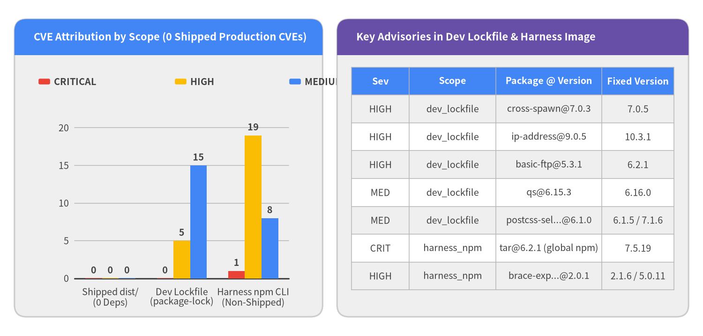
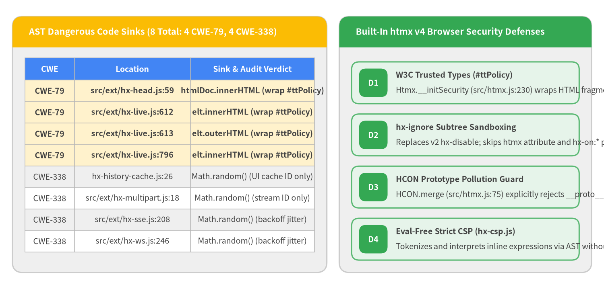
Detailed Security & Supply-Chain Audit Data
1. Supply-Chain & Trivy Vulnerability Breakdown
- Production Browser Bundles (
dist/htmx.js,dist/htmx.esm.js,dist/htmax.js): 0 dependencies, 0 CVEs. - Secrets & Container IaC Hardening:
0hardcoded secrets (SecurityFacts.secrets = [],AstFacts.hardcoded_secrets = [],committed_secret_files = []) and0Dockerfile misconfigurations (misconfigurations = []). - Development Lockfile (
package-lock.jsondev_or_optionalscope —22total CVEs:0CRITICAL,5HIGH,15MEDIUM,2LOW):[HIGH]CVE-2024-21538incross-spawn@7.0.3-> fix=7.0.5, 6.0.6(ReDoS in dev test runner subprocess spawning)[HIGH]CVE-2026-69192inip-address@9.0.5-> fix=10.3.1(IP address parsing inconsistency in dev server dependency)[HIGH]CVE-2026-102990inbasic-ftp@5.3.1-> fix=6.2.1(DoS via crafted directory listing in Playwright browser downloader dependency)[HIGH]CVE-2026-19693&CVE-2026-56876inextract-zip@2.0.1(Symlink validation in Playwright zip extraction helper)[MEDIUM]CVE-2026-82417inqs@6.15.3-> fix=6.16.0[MEDIUM]CVE-2026-104844inpostcss-selector-parser@6.0.10/6.1.0-> fix=7.1.6, 6.1.5
- Test Harness Global
npmCLI (/usr/local/lib/node_modules/npminside non-shippednode:22-bookwormimage —29findings):- Trivy's container image scan flagged
29advisories in the base image's globalnpmCLI packages (tar@6.2.1CVE-2026-59873->7.5.19,brace-expansion@2.0.1CVE-2026-102276->5.0.10,glob@10.4.2CVE-2025-64756->10.5.0,minimatch@9.0.5CVE-2026-26996->9.0.6,pacote@18.0.6CVE-2026-9496->21.5.1). These belong to the container's pre-installed/usr/local/lib/node_modules/npmbinary and are never part ofhtmx.
- Trivy's container image scan flagged
2. Static CWE Sink Audit (AstFacts.dangerous_sinks, 8 Locations)
| Severity | CWE ID | Location | Expression | Engineering Verdict & Remediation |
|---|---|---|---|---|
HIGH |
CWE-79 (xss) |
src/ext/hx-head.js:59 |
htmlDoc.innerHTML = text |
Parses <head> markup from server responses; should wrap text via core's #ttPolicy helper for strict Trusted Types compatibility. |
HIGH |
CWE-79 (xss) |
src/ext/hx-live.js:612 |
elt.innerHTML = val |
Reactive q().html setter; should route val through core's #ttPolicy wrapper (P1-2). |
HIGH |
CWE-79 (xss) |
src/ext/hx-live.js:613 |
elt.outerHTML = val |
Reactive outerHTML setter; should route val through core's #ttPolicy wrapper (P1-2). |
HIGH |
CWE-79 (xss) |
src/ext/hx-live.js:796 |
elt.innerHTML = ... |
Template initialization in hx-live; should route through #ttPolicy (P1-2). |
LOW |
CWE-338 |
src/ext/hx-history-cache.js:26 |
Math.random() |
Generates non-security local cache key suffix; benign in browser context. |
LOW |
CWE-338 |
src/ext/hx-multipart.js:18 |
Math.random() |
Generates internal multipart stream correlation ID; benign. |
LOW |
CWE-338 |
src/ext/hx-sse.js:208 |
Math.random() |
Computes exponential backoff jitter for SSE reconnection; benign. |
LOW |
CWE-338 |
src/ext/hx-ws.js:246 |
Math.random() |
Computes exponential backoff jitter for WebSocket reconnection; benign. |
3. API Endpoint Attack Surface (api_endpoints)
- Extracted Server HTTP Routes:
0(htmxis a client-side browser hypermedia library and CLI migration scanner; dynamic server penetration testingSEC-06isnot_applicable).